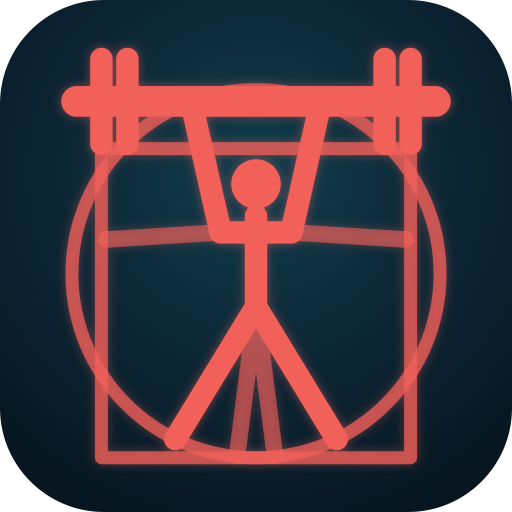

Bar paths · side view
Each from its own start position. Drag across them to scrub every video.

Weightlifting analysis from one phone
Snatch, clean, squat, deadlift, bench press and overhead press are recognised on their own.
Record opens the phone's camera app, which films at 60 fps. If it starts on the front camera, flip to the back one; the first time, pick FHD 60 at the top right (it's remembered). Or film in the camera app and choose the video.
To keep it on the home screen: Safari's Share button → Add to Home Screen.
Every lift you analyse is kept here, on this phone, to open again and to compare.
Tap a lift to see its analysis. Tick two to four to compare them, or any to keep only their analysed part or delete them.
Each from its own start position. Drag across them to scrub every video.
Lined up at lift-off. Drag across it to scrub.
Analysing…
Add the load on the bar to see power and force.
Starting thresholds, meant to be tuned with your coach.
Each rep's average speed on the way up. Tap a rep to jump to it.
Coloured by bar speed. The sideways scale is stretched to show the loop. Drag across it to scrub.
Shaded by stage. Drag across it to scrub.
Your height puts the bar's peak height and the jerk's dip in proportion to you, as studies of lifters do. Body tracking downloads a 6–9 MB model the first time. Everything runs on this device; nothing is uploaded.